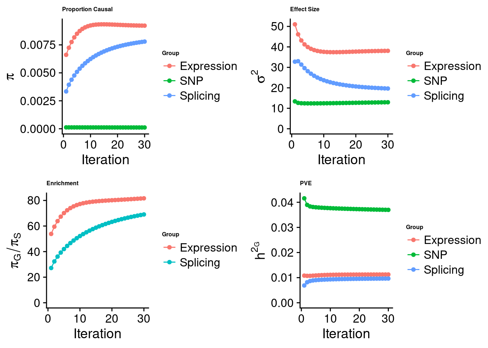

Last updated: 2023-01-06
Checks: 5 2
Knit directory: cTWAS_analysis/
This reproducible R Markdown analysis was created with workflowr (version 1.7.0). The Checks tab describes the reproducibility checks that were applied when the results were created. The Past versions tab lists the development history.
The R Markdown file has unstaged changes. To know which version of the R Markdown file created these results, you’ll want to first commit it to the Git repo. If you’re still working on the analysis, you can ignore this warning. When you’re finished, you can run wflow_publish to commit the R Markdown file and build the HTML.
Great job! The global environment was empty. Objects defined in the global environment can affect the analysis in your R Markdown file in unknown ways. For reproduciblity it’s best to always run the code in an empty environment.
The command set.seed(20211220) was run prior to running the code in the R Markdown file. Setting a seed ensures that any results that rely on randomness, e.g. subsampling or permutations, are reproducible.
Great job! Recording the operating system, R version, and package versions is critical for reproducibility.
Nice! There were no cached chunks for this analysis, so you can be confident that you successfully produced the results during this run.
Using absolute paths to the files within your workflowr project makes it difficult for you and others to run your code on a different machine. Change the absolute path(s) below to the suggested relative path(s) to make your code more reproducible.
| absolute | relative |
|---|---|
| /project2/xinhe/shengqian/cTWAS/cTWAS_analysis/data/ | data |
| /project2/xinhe/shengqian/cTWAS/cTWAS_analysis/code/ctwas_config_b38.R | code/ctwas_config_b38.R |
| /project2/xinhe/shengqian/cTWAS/cTWAS_analysis/data/LDL/Liver/ctwas_gene_res.RDS | data/LDL/Liver/ctwas_gene_res.RDS |
| /project2/xinhe/shengqian/cTWAS/cTWAS_analysis/data/LDL_S/Liver/LDL_Liver_ctwas_gene_res.RDS | data/LDL_S/Liver/LDL_Liver_ctwas_gene_res.RDS |
Great! You are using Git for version control. Tracking code development and connecting the code version to the results is critical for reproducibility.
The results in this page were generated with repository version 486233b. See the Past versions tab to see a history of the changes made to the R Markdown and HTML files.
Note that you need to be careful to ensure that all relevant files for the analysis have been committed to Git prior to generating the results (you can use wflow_publish or wflow_git_commit). workflowr only checks the R Markdown file, but you know if there are other scripts or data files that it depends on. Below is the status of the Git repository when the results were generated:
Ignored files:
Ignored: .Rhistory
Ignored: .ipynb_checkpoints/
Untracked files:
Untracked: Proposal plots.R
Untracked: RGS14.pdf
Untracked: RNF186.pdf
Untracked: SCZ_annotation.xlsx
Untracked: SLC8B1.pdf
Untracked: analysis/.ipynb_checkpoints/
Untracked: cache/
Untracked: code/.ipynb_checkpoints/
Untracked: data/.ipynb_checkpoints/
Untracked: data/FUMA_output/
Untracked: data/GO_Terms/
Untracked: data/IBD_ME/
Untracked: data/LDL/
Untracked: data/LDL_E_S/
Untracked: data/LDL_S/
Untracked: data/LDL_multi/
Untracked: data/PGC3_SCZ_wave3_public.v2.tsv
Untracked: data/SCZ/
Untracked: data/SCZ_2014_EUR/
Untracked: data/SCZ_2014_EUR_ME/
Untracked: data/SCZ_2018/
Untracked: data/SCZ_2018_ME/
Untracked: data/SCZ_2018_S/
Untracked: data/SCZ_2020/
Untracked: data/SCZ_S/
Untracked: data/Supplementary Table 15 - MAGMA.xlsx
Untracked: data/Supplementary Table 20 - Prioritised Genes.xlsx
Untracked: data/UKBB/
Untracked: data/UKBB_SNPs_Info.text
Untracked: data/gene_OMIM.txt
Untracked: data/gene_pip_0.8.txt
Untracked: data/gwas_sumstats/
Untracked: data/magma.genes.out
Untracked: data/mashr_Heart_Atrial_Appendage.db
Untracked: data/mashr_sqtl/
Untracked: data/multigroup/
Untracked: data/notes.txt
Untracked: data/scz_2018.RDS
Untracked: data/summary_known_genes_annotations.xlsx
Untracked: temp_LDR/
Untracked: top_genes_32.txt
Untracked: top_genes_37.txt
Untracked: top_genes_43.txt
Untracked: top_genes_54.txt
Untracked: top_genes_81.txt
Untracked: z_snp_pos_SCZ.RData
Untracked: z_snp_pos_SCZ_2014_EUR.RData
Untracked: z_snp_pos_SCZ_2018.RData
Untracked: z_snp_pos_SCZ_2020.RData
Unstaged changes:
Deleted: analysis/BMI_S_results.Rmd
Modified: analysis/LDL_Liver_E_S.Rmd
Deleted: code/run_IBD_ctwas_rss_LDR_ME.R
Note that any generated files, e.g. HTML, png, CSS, etc., are not included in this status report because it is ok for generated content to have uncommitted changes.
These are the previous versions of the repository in which changes were made to the R Markdown (analysis/LDL_Liver_E_S.Rmd) and HTML (docs/LDL_Liver_E_S.html) files. If you’ve configured a remote Git repository (see ?wflow_git_remote), click on the hyperlinks in the table below to view the files as they were in that past version.
| File | Version | Author | Date | Message |
|---|---|---|---|---|
| Rmd | 486233b | sq-96 | 2023-01-06 | update |
| html | 486233b | sq-96 | 2023-01-06 | update |
| Rmd | fa84ed2 | sq-96 | 2023-01-06 | update |
| html | fa84ed2 | sq-96 | 2023-01-06 | update |
| Rmd | a72ca00 | sq-96 | 2023-01-06 | update |
| html | a72ca00 | sq-96 | 2023-01-06 | update |
| Rmd | 72d6af3 | sq-96 | 2023-01-06 | update |
| html | 72d6af3 | sq-96 | 2023-01-06 | update |
analysis_id <- params$analysis_id
trait_id <- params$trait_id
weight <- params$weight
results_dir <- paste0("/project2/xinhe/shengqian/cTWAS/cTWAS_analysis/data/", trait_id, "/", weight)
source("/project2/xinhe/shengqian/cTWAS/cTWAS_analysis/code/ctwas_config_b38.R")
options(digits = 4)
| Version | Author | Date |
|---|---|---|
| 72d6af3 | sq-96 | 2023-01-06 |
#estimated group prior
estimated_group_prior <- estimated_group_prior_all[,ncol(group_prior_rec)]
print(estimated_group_prior) SNP Liver Liver_Splicing
0.0001129 0.0092207 0.0077965 #estimated group prior variance
estimated_group_prior_var <- estimated_group_prior_var_all[,ncol(group_prior_var_rec)]
print(estimated_group_prior_var) SNP Liver Liver_Splicing
12.94 38.08 19.66 #estimated enrichment
estimated_enrichment <- estimated_enrichment_all[ncol(group_prior_var_rec)]
print(estimated_enrichment)[1] 58.71#report sample size
print(sample_size)[1] 343621#report group size
print(group_size) SNP Liver Liver_Splicing
8696600 11003 21610 #estimated group PVE
estimated_group_pve <- estimated_group_pve_all[,ncol(group_prior_rec)]
print(estimated_group_pve) SNP Liver Liver_Splicing
0.036977 0.011243 0.009639 #total PVE
sum(estimated_group_pve)[1] 0.05786#attributable PVE
estimated_group_pve/sum(estimated_group_pve) SNP Liver Liver_Splicing
0.6391 0.1943 0.1666 genename group region_tag susie_pip mu2 PVE z
42511 PARP9 Liver_Splicing 3_76 1.0480 43.27 1.321e-04 6.409
28221 HP Liver_Splicing 16_38 1.0432 281.65 8.772e-04 21.869
3303 LRCH4 Liver_Splicing 7_61 1.0307 32.50 9.946e-05 5.294
5493 SLC22A18 Liver_Splicing 11_2 1.0244 20.75 6.177e-05 4.096
20901 ERGIC3 Liver_Splicing 20_21 1.0111 53.36 1.474e-04 -7.267
534 ASGR1 Liver_Splicing 17_6 1.0107 87.79 2.610e-04 9.645
21100 ABCA8 Liver_Splicing 17_39 1.0070 29.06 8.367e-05 -4.775
3228 LDLR Liver_Splicing 19_9 1.0000 754.29 2.195e-03 26.898
4433 PSRC1 Liver_Expression 1_67 1.0000 1649.76 4.801e-03 -41.687
2454 ST3GAL4 Liver_Expression 11_77 1.0000 170.25 4.955e-04 13.376
11327 HPR Liver_Expression 16_38 1.0000 179.27 5.217e-04 -17.963
3720 INSIG2 Liver_Expression 2_69 1.0000 67.87 1.975e-04 -8.983
5561 ABCG8 Liver_Expression 2_27 0.9989 309.08 8.985e-04 -20.294
5988 FADS1 Liver_Expression 11_34 0.9977 164.34 4.772e-04 12.926
233 NPC1L1 Liver_Expression 7_32 0.9948 87.59 2.536e-04 -10.762
7405 ABCA1 Liver_Expression 9_53 0.9942 69.88 2.022e-04 7.982
16241 CYP4F12 Liver_Splicing 19_13 0.9919 38.71 1.019e-04 -5.868
27731 HLA-B Liver_Splicing 6_25 0.9876 77.43 2.197e-04 9.069
8523 TNKS Liver_Expression 8_12 0.9874 73.03 2.099e-04 11.039
1597 PLTP Liver_Expression 20_28 0.9874 62.11 1.785e-04 -5.732
1999 PRKD2 Liver_Expression 19_33 0.9863 33.27 9.550e-05 5.072
9365 GAS6 Liver_Expression 13_62 0.9849 70.41 2.018e-04 -8.924
3754 RRBP1 Liver_Expression 20_13 0.9821 32.15 9.189e-05 7.008
38511 NADK2 Liver_Splicing 5_24 0.9817 21.64 6.020e-05 4.321
48011 PXK Liver_Splicing 3_40 0.9804 57.28 1.002e-04 6.852
7036 INHBB Liver_Expression 2_70 0.9747 73.68 2.090e-04 -8.519
11910 ACP6 Liver_Splicing 1_73 0.9659 20.51 5.467e-05 3.994
11257 CYP2A6 Liver_Expression 19_28 0.9655 30.63 8.606e-05 5.407
6090 CSNK1G3 Liver_Expression 5_75 0.9614 83.51 2.336e-04 9.116
3247 KDSR Liver_Expression 18_35 0.9570 24.48 6.817e-05 -4.526
2092 SP4 Liver_Expression 7_19 0.9542 101.34 2.814e-04 10.693
8571 STAT5B Liver_Expression 17_25 0.9493 30.62 8.458e-05 5.426
6387 TTC39B Liver_Expression 9_13 0.9457 23.11 6.361e-05 -4.334
3300 C10orf88 Liver_Expression 10_77 0.9401 36.63 1.002e-04 -6.788
6217 PELO Liver_Expression 5_31 0.9369 71.14 1.940e-04 8.288
3562 ACVR1C Liver_Expression 2_94 0.9367 25.79 7.029e-05 -4.687
30201 ITGAL Liver_Splicing 16_24 0.9326 22.82 5.679e-05 -4.428
10612 TRIM39 Liver_Expression 6_25 0.9250 81.36 2.190e-04 8.840
6774 PKN3 Liver_Expression 9_66 0.9216 47.52 1.274e-04 -6.621
4702 DDX56 Liver_Expression 7_32 0.9191 56.43 1.509e-04 9.642
1009 GSK3B Liver_Expression 3_74 0.9016 36.14 9.482e-05 6.475
8853 FUT2 Liver_Expression 19_33 0.8999 103.99 2.724e-04 -11.927
3123 KIF13B Liver_Splicing 8_28 0.8776 24.61 5.516e-05 -4.718
28210 ALDH1A2 Liver_Splicing 15_26 0.8719 65.78 1.376e-04 -7.783
5542 CNIH4 Liver_Expression 1_114 0.8710 40.73 1.033e-04 6.146
9046 KLHDC7A Liver_Expression 1_13 0.8675 21.75 5.490e-05 4.124
34401 MARC1 Liver_Splicing 1_112 0.8650 30.76 6.466e-05 5.955
60641 THOP1 Liver_Splicing 19_3 0.8548 28.40 5.660e-05 5.087
105410 CCDC57 Liver_Splicing 17_47 0.8511 21.67 4.055e-05 -4.344
43701 PHC1 Liver_Splicing 12_9 0.8414 36.88 7.599e-05 6.156
6097 ALLC Liver_Expression 2_2 0.8407 27.83 6.809e-05 4.919
9054 SPTY2D1 Liver_Expression 11_13 0.8399 32.99 8.065e-05 -5.557
8411 POP7 Liver_Expression 7_62 0.8373 41.96 1.022e-04 -5.845
65291 UGT1A1 Liver_Splicing 2_137 0.8245 32.66 6.218e-05 5.450
6953 USP1 Liver_Expression 1_39 0.8235 252.66 6.055e-04 16.258
23511 FLOT2 Liver_Splicing 17_17 0.8214 34.23 5.561e-05 -3.738
23451 FKRP Liver_Splicing 19_33 0.8181 24.34 3.675e-05 -3.018
5741 SPRED2 Liver_Splicing 2_42 0.8078 31.42 4.753e-05 -4.438
40561 NR1I2 Liver_Splicing 3_74 0.8014 29.82 4.898e-05 -5.960
62021 TMEM57 Liver_Splicing 1_18 0.8008 102.18 1.905e-04 -10.599 genename combined_pip expression_pip splicing_pip expression_only_pip
2779 DDX56 1.4552 0.919 0.536 0.947
2225 CNIH4 1.2616 0.871 0.391 0.978
8085 PXK 1.2172 0.237 0.980 0.793
9806 ST3GAL4 1.0781 1.000 0.078 NA
7134 PARP9 1.0757 0.028 1.048 0.008
4661 HP 1.0432 0.000 1.043 NA
5559 LRCH4 1.0331 0.002 1.031 0.007
158 ACP6 1.0327 0.067 0.966 0.798
6778 NPC1L1 1.0311 0.995 0.036 0.953
21 ABCA1 1.0302 0.994 0.036 0.995
9256 SLC22A18 1.0244 0.000 1.024 NA
8746 RRBP1 1.0157 0.982 0.034 0.004
4668 HPR 1.0127 1.000 0.013 1.000
3375 ERGIC3 1.0111 0.000 1.011 NA
813 ASGR1 1.0107 0.000 1.011 NA
10912 TTC39B 1.0096 0.946 0.064 0.936
27 ABCA8 1.0070 0.000 1.007 NA
2650 CYP4F12 1.0059 0.014 0.992 0.011
4015 GAS6 1.0012 0.985 0.016 0.988
7874 PRKD2 1.0004 0.986 0.014 0.986
5415 LDLR 1.0000 0.000 1.000 NA
8001 PSRC1 1.0000 1.000 0.000 1.000
4911 INSIG2 1.0000 1.000 0.000 1.000
54 ABCG8 0.9989 0.999 0.000 1.000
3500 FADS1 0.9977 0.998 0.000 1.000
6470 NADK2 0.9945 0.013 0.982 0.019
7586 PLTP 0.9940 0.987 0.007 0.988
10447 TMEM199 0.9896 0.548 0.442 0.505
4583 HLA-B 0.9876 0.000 0.988 0.002
10610 TNKS 0.9874 0.987 0.000 0.991
10261 THOP1 0.9778 0.123 0.855 0.426
4893 INHBB 0.9747 0.975 0.000 0.982
12050 ZSCAN31 0.9740 0.421 0.553 0.348
2480 CSNK1G3 0.9706 0.961 0.010 0.975
5150 KDSR 0.9671 0.957 0.010 0.955
2627 CYP2A6 0.9655 0.965 0.000 0.962
9636 SP4 0.9542 0.954 0.000 0.977
9842 STAT5B 0.9493 0.949 0.000 0.926
1217 C10orf88 0.9401 0.940 0.000 0.932
7299 PELO 0.9369 0.937 0.000 0.935
197 ACVR1C 0.9367 0.937 0.000 0.923
11188 USP53 0.9362 0.152 0.784 0.521
4988 ITGAL 0.9326 0.000 0.933 NA
10767 TRIM39 0.9250 0.925 0.000 0.999
1037 BCAT2 0.9218 0.135 0.787 0.547
7485 PKN3 0.9216 0.922 0.000 0.936
9772 SRRT 0.9170 0.786 0.131 0.934
451 ALLC 0.9140 0.841 0.073 0.793
4357 GSK3B 0.9016 0.902 0.000 0.673
3946 FUT2 0.8999 0.900 0.000 0.966
1160 BRI3 0.8937 0.733 0.161 0.734
5805 MARC1 0.8789 0.014 0.865 0.008
5197 KIF13B 0.8776 0.000 0.878 NA
7366 PHC1 0.8726 0.031 0.842 0.021
413 ALDH1A2 0.8719 0.000 0.872 NA
5249 KLHDC7A 0.8675 0.868 0.000 0.816
1664 CCDC57 0.8670 0.016 0.851 0.015
10517 TMEM57 0.8572 0.056 0.801 0.355
7436 PIH1D1 0.8528 0.111 0.742 0.365
11081 UGT1A1 0.8460 0.021 0.825 0.018
9736 SPTY2D1 0.8399 0.840 0.000 0.808
7696 POP7 0.8373 0.837 0.000 0.809
2552 CTSH 0.8315 0.639 0.193 0.556
11152 USP1 0.8235 0.823 0.000 0.895
3850 FLOT2 0.8214 0.000 0.821 NA
3839 FKRP 0.8205 0.002 0.819 0.008
9714 SPRED2 0.8146 0.007 0.808 0.007
7809 PPP6R2 0.8134 0.022 0.791 0.029
6811 NR1I2 0.8126 0.011 0.802 0.009
10008 SYTL1 0.8050 0.789 0.016 0.792
twas_z splicing_only_pip
2779 9.6419 0.109
2225 6.1455 1.803
8085 -3.7920 1.281
9806 NA 1.024
7134 -0.9822 1.159
4661 NA 1.060
5559 2.2446 1.095
158 4.0601 1.161
6778 -10.7619 0.063
21 7.9820 0.076
9256 NA 1.199
8746 2.5608 0.056
4668 -17.9628 0.026
3375 NA 1.119
813 NA 1.034
10912 -4.3345 0.139
27 NA 1.051
2650 -0.5298 1.192
4015 -8.9237 0.200
7874 5.0722 0.509
5415 NA 1.000
8001 -41.6873 NA
4911 -8.9827 NA
54 -20.2940 NA
3500 12.9264 NA
6470 1.0804 1.016
7586 -5.7325 0.177
10447 6.0117 0.607
4583 0.3148 0.992
10610 11.0386 NA
10261 4.9057 1.091
4893 -8.5189 NA
12050 1.6961 0.791
2480 9.1163 0.019
5150 -4.5263 0.152
2627 5.4070 NA
9636 10.6932 NA
9842 5.4263 NA
1217 -6.7878 NA
7299 8.2884 NA
197 -4.6874 NA
11188 -4.5084 0.999
4988 NA 1.036
10767 8.8402 0.005
1037 4.7964 0.968
7485 -6.6206 NA
9772 5.4250 0.741
451 4.9191 0.222
4357 6.4748 NA
3946 -11.9271 NA
1160 -5.1401 0.770
5805 1.2931 0.086
5197 NA 0.948
7366 -0.8107 0.905
413 NA 0.844
5249 4.1242 NA
1664 0.4010 1.440
10517 -10.2642 0.519
7436 -3.8775 0.981
11081 2.6601 0.909
9736 -5.5571 NA
7696 -5.8453 NA
2552 3.7956 0.756
11152 16.2582 NA
3850 NA 1.019
3839 3.8959 1.701
9714 0.9017 1.025
7809 -3.0827 1.141
6811 1.8213 0.516
10008 -3.9629 0.051library("readxl")
known_annotations <- read_xlsx("data/summary_known_genes_annotations.xlsx", sheet="LDL")New names:
• `` -> `...4`
• `` -> `...5`known_annotations <- unique(known_annotations$`Gene Symbol`)
unrelated_genes <- df_gene$genename[!(df_gene$genename %in% known_annotations)]
#number of genes in known annotations
print(length(known_annotations))[1] 69#number of genes in known annotations with imputed expression
print(sum(known_annotations %in% df_gene$genename))[1] 60#assign ctwas, TWAS, and bystander genes
ctwas_genes <- df_gene$genename[df_gene$combined_pip>0.95]
twas_genes <- ctwas_gene_res_E$genename[abs(ctwas_gene_res_E$twas_z)>sig_thresh]
novel_genes <- ctwas_genes[!(ctwas_genes %in% twas_genes)]
#significance threshold for TWAS
print(sig_thresh)[1] 4.583#number of ctwas genes
length(ctwas_genes)[1] 37#number of twas genes
length(twas_genes)[1] 221#show novel genes (ctwas genes with not in TWAS genes)
df_gene[df_gene$genename %in% novel_genes,] genename combined_pip expression_pip splicing_pip expression_only_pip
8085 PXK 1.2172 0.237 0.980 0.793
9806 ST3GAL4 1.0781 1.000 0.078 NA
7134 PARP9 1.0757 0.028 1.048 0.008
4661 HP 1.0432 0.000 1.043 NA
5559 LRCH4 1.0331 0.002 1.031 0.007
158 ACP6 1.0327 0.067 0.966 0.798
9256 SLC22A18 1.0244 0.000 1.024 NA
8746 RRBP1 1.0157 0.982 0.034 0.004
3375 ERGIC3 1.0111 0.000 1.011 NA
813 ASGR1 1.0107 0.000 1.011 NA
10912 TTC39B 1.0096 0.946 0.064 0.936
27 ABCA8 1.0070 0.000 1.007 NA
2650 CYP4F12 1.0059 0.014 0.992 0.011
5415 LDLR 1.0000 0.000 1.000 NA
6470 NADK2 0.9945 0.013 0.982 0.019
4583 HLA-B 0.9876 0.000 0.988 0.002
12050 ZSCAN31 0.9740 0.421 0.553 0.348
5150 KDSR 0.9671 0.957 0.010 0.955
twas_z splicing_only_pip
8085 -3.7920 1.281
9806 NA 1.024
7134 -0.9822 1.159
4661 NA 1.060
5559 2.2446 1.095
158 4.0601 1.161
9256 NA 1.199
8746 2.5608 0.056
3375 NA 1.119
813 NA 1.034
10912 -4.3345 0.139
27 NA 1.051
2650 -0.5298 1.192
5415 NA 1.000
6470 1.0804 1.016
4583 0.3148 0.992
12050 1.6961 0.791
5150 -4.5263 0.152#sensitivity / recall
sensitivity <- rep(NA,1)
names(sensitivity) <- c("ctwas")
sensitivity["ctwas"] <- sum(ctwas_genes %in% known_annotations)/length(known_annotations)
sensitivity["TWAS"] <- sum(twas_genes %in% known_annotations)/length(known_annotations)
sensitivity ctwas TWAS
0.1014 0.2754 #specificity
specificity <- rep(NA,1)
names(specificity) <- c("ctwas")
specificity["ctwas"] <- sum(!(unrelated_genes %in% ctwas_genes))/length(unrelated_genes)
specificity["TWAS"] <- sum(!(unrelated_genes %in% twas_genes))/length(unrelated_genes)
specificity ctwas TWAS
0.9975 0.9839 #precision / PPV
precision <- rep(NA,1)
names(precision) <- c("ctwas")
precision["ctwas"] <- sum(ctwas_genes %in% known_annotations)/length(ctwas_genes)
precision["TWAS"] <- sum(twas_genes %in% known_annotations)/length(twas_genes)
precision ctwas TWAS
0.18919 0.08597 #ROC curves
pip_range <- (0:1000)/1000
sensitivity <- rep(NA, length(pip_range))
specificity <- rep(NA, length(pip_range))
sessionInfo()R version 4.1.0 (2021-05-18)
Platform: x86_64-pc-linux-gnu (64-bit)
Running under: CentOS Linux 7 (Core)
Matrix products: default
BLAS/LAPACK: /software/openblas-0.3.13-el7-x86_64/lib/libopenblas_haswellp-r0.3.13.so
locale:
[1] LC_CTYPE=en_US.UTF-8 LC_NUMERIC=C
[3] LC_TIME=en_US.UTF-8 LC_COLLATE=en_US.UTF-8
[5] LC_MONETARY=en_US.UTF-8 LC_MESSAGES=en_US.UTF-8
[7] LC_PAPER=en_US.UTF-8 LC_NAME=C
[9] LC_ADDRESS=C LC_TELEPHONE=C
[11] LC_MEASUREMENT=en_US.UTF-8 LC_IDENTIFICATION=C
attached base packages:
[1] stats graphics grDevices utils datasets methods base
other attached packages:
[1] readxl_1.4.1 cowplot_1.1.1 ggplot2_3.4.0 workflowr_1.7.0
loaded via a namespace (and not attached):
[1] reticulate_1.26 tidyselect_1.2.0 xfun_0.35 bslib_0.4.1
[5] lattice_0.20-44 generics_0.1.3 colorspace_2.0-3 vctrs_0.5.1
[9] htmltools_0.5.4 yaml_2.3.6 utf8_1.2.2 blob_1.2.3
[13] rlang_1.0.6 jquerylib_0.1.4 later_1.3.0 pillar_1.8.1
[17] withr_2.5.0 glue_1.6.2 DBI_1.1.3 bit64_4.0.5
[21] lifecycle_1.0.3 stringr_1.5.0 cellranger_1.1.0 munsell_0.5.0
[25] gtable_0.3.1 evaluate_0.19 memoise_2.0.1 labeling_0.4.2
[29] knitr_1.41 callr_3.7.3 fastmap_1.1.0 httpuv_1.6.7
[33] ps_1.7.2 fansi_1.0.3 highr_0.9 Rcpp_1.0.9
[37] promises_1.2.0.1 scales_1.2.1 cachem_1.0.6 jsonlite_1.8.4
[41] farver_2.1.0 fs_1.5.2 bit_4.0.5 png_0.1-8
[45] digest_0.6.31 stringi_1.7.8 processx_3.8.0 dplyr_1.0.10
[49] getPass_0.2-2 rprojroot_2.0.3 grid_4.1.0 cli_3.4.1
[53] tools_4.1.0 magrittr_2.0.3 sass_0.4.4 tibble_3.1.8
[57] RSQLite_2.2.19 whisker_0.4.1 pkgconfig_2.0.3 Matrix_1.3-3
[61] data.table_1.14.6 assertthat_0.2.1 rmarkdown_2.19 httr_1.4.4
[65] rstudioapi_0.14 R6_2.5.1 git2r_0.30.1 compiler_4.1.0